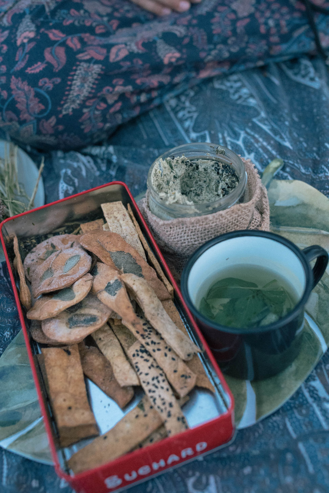

Being confident on camera isn’t about being perfect, it’s about feeling comfortable enough to show up as yourself. If you're a small business owner, creative, or nonprofit founder who feels awkward being recorded, you're in good company. Feeling nervous is completely normal, especially when you're used to being behind the scenes. The good news? You don’t need to perform or pretend. Here are some real, low-pressure ways to feel more natural, relaxed, and confident when you step in front of the camera.
Do something with your hands or body while you talk. It could be holding a cup of coffee or flipping through a notebook. Why? It keeps your mind busy and distracted from overthinking the camera. When you’re focused on that little action, you relax more and it comes across as natural and confident.This simple tip can help you be more confident on camera without even trying too hard.
You don’t need to sound like a TED speaker, actually much better if you don't. Trying to be perfect can make you sound stiff and disconnected. It’s way better to just sound like you, even if you say “um” a few times or stumble over a word. It makes you sound more human.
A tip for building confidence on camera: blend teaching with your own stories. When you share something personal (even if it’s silly), it helps people relate to you and makes you feel more natural.
If standing makes you feel like you’re presenting. Sitting can help you feel relaxed and more conversational. Try filming while sitting on your couch or somewhere you’d actually talk to a friend. Sitting is a simple tip to help you be more confident on camera.
Full scripts can make you sound robotic. Try this instead: Script only your hook (what grabs people at the start) and your call to action (what you want them to do, after they've seen your video).
Use bullet points for your main ideas. Talk through those points like you’re explaining them to a friend. This small change will help you be more confident on camera by sounding way more natural and less like you’re reading.


Lighting affects how you feel about how you look on camera. Face a window for free natural light. No window? Get yourself a softbox or LED light and place it slightly above and to the side of your camera.
Good lighting helps you be more confident on camera because when you look good, you feel good.
Clear audio is much more important than fancy visuals, you can buy a lavalier mic to help as it makes your voice sound clean and clear, and that makes you sound more confident too. Sound quality is a huge part of how to be more confident on camera because if people can hear you well, you feel like a pro.


Editing is very helpful when it comes to building confidence on camera. If you mess up, or have an awkward pause you can just cut it. Don’t like how a certain part looks? Cover it with B-roll. Knowing that you can fix mistakes in post-production takes the pressure off while filming, making it much easier to relax and be yourself in front of the camera.
You don’t have to perform, just talk like you would to a friend and remember that confidence comes with practice. At Munjiri Videos, we help thoughtful brands and organizations tell their stories on camera even if you're feeling shy or unsure where to start. Whether you’re looking for support behind the camera or want to learn how to create your own videos with confidence, we’re here to simplify the process and help your message land with the people who matter most.
What are some quick tips to feel more confident on camera?
Start by doing something with your hands, use bullet points instead of full scripts, and sit down to feel more relaxed. Good lighting and clear audio also make a big difference.
Do I need to be a great speaker to look confident on camera?
Not at all. Confidence on camera isn’t about being perfect, it’s about being comfortable. You’ll come across more confident when you speak like yourself rather than trying to sound overly polished.
How can I stop sounding stiff or robotic on video?
Skip the word-for-word script. Instead, write down a few bullet points and speak naturally, as if you’re explaining the idea to a friend. This helps you sound more authentic and confident.
Can editing help me feel more confident on camera?
Absolutely. Knowing you can cut mistakes or awkward moments later takes the pressure off. A little post-production magic can make your video flow better and boost your confidence while filming.
How important is lighting in helping me feel confident on camera?
Very important! Good lighting makes you look better on camera, which boosts your confidence. Natural light from a window or a soft LED light can make a huge difference.
What kind of microphone should I use to sound more confident on camera?
A lavalier (clip-on) mic is an affordable, easy way to boost your audio quality. Clear sound helps you feel more professional and confident.
I hate how I look or sound on video. What can I do?
This is more common than you think. Start small and practice regularly. Use flattering lighting, wear something you feel good in, and remind yourself that people care more about your message than how you look or sound.
How can I practice being more confident on camera?
Record yourself in low-stakes settings, watch it back, notice what works, and keep going. Confidence comes with repetition.
Can being myself on camera really help with confidence?
Yes! Audiences connect most with people who are genuine. When you stop trying to perform and just talk like you would to a friend, your natural confidence starts to come through.

Brand Video Production
Social Media Video Production
Nature Video Production
Creative Video Productions
Charity Video Production
Drone Videographer
Event Video Production
Product Video Production
Travel Video Production
Learn Video Making
Video Storytelling
Video Making Tips
Video Marketing & Social Media Strategies
Nature Stories
Behind the Scenes
Client Stories
Locations & Travel
Location
Based in Portugal and South Africa, offering video production services worldwide.
Email: katy@munjiri.com
Get updates and free resources.